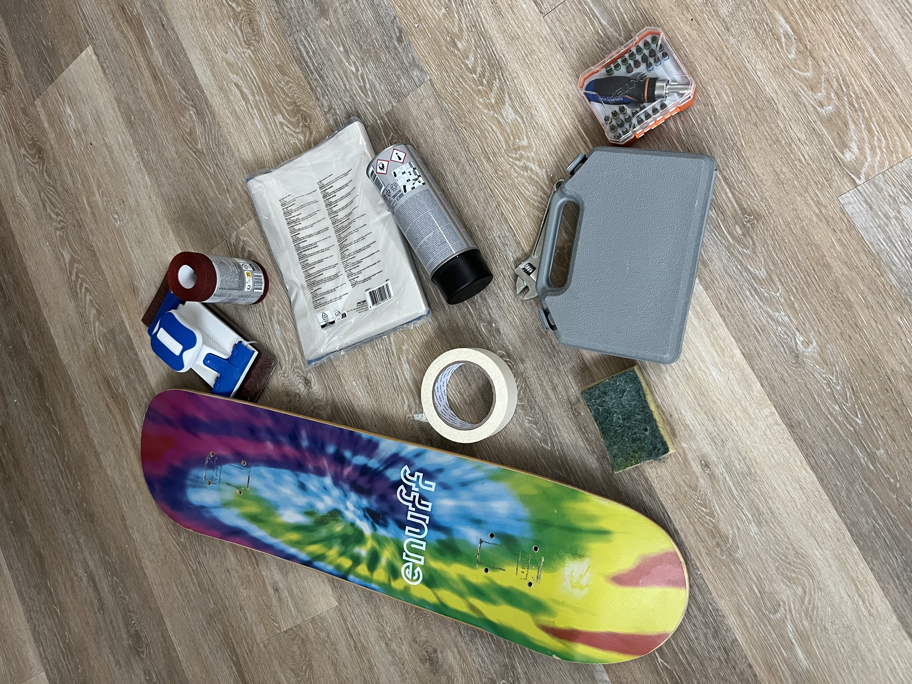
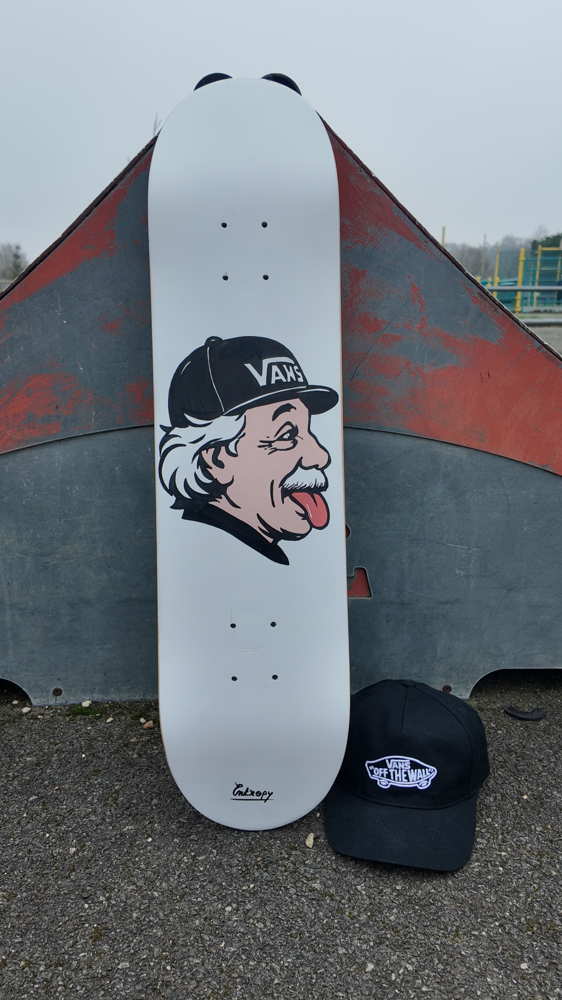
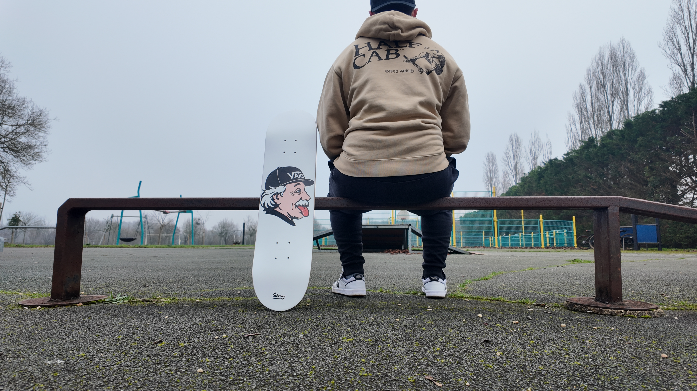

Einstein
Une icône scientifique, réinterprétée à la culture du skate.
Source d’inspiration
J’ai toujours eu un attrait profond pour les sciences, et plus particulièrement pour la physique.
C’est naturellement dans cette voie que j’ai orienté mes études, de la classe préparatoire MP jusqu’à l’école d’ingénieur.
J’avais envie de créer une planche qui m’accompagne dans cet univers, une planche qui fasse le lien entre mon parcours académique et ma passion pour la ride.
Avant / Après

Pendant mes deux années de prépa, je gardais au-dessus de mon bureau une image découpée dans un magazine : Albert Einstein tirant la langue, associé à un corps musclé. À l’époque, j’étais très investi dans le sport et la musculation, et cette image me faisait sourire autant qu’elle me motivait. Elle est devenue, avec le temps, un symbole chargé de souvenirs.

C’est de là qu’est née l’idée de ce custom. Einstein, figure emblématique de la science, revisité avec une touche plus décalée et contemporaine. L’ajout de la casquette Vans s’est imposé naturellement : un clin d’œil à mon attachement à la marque, mais surtout une façon d’ancrer cette figure scientifique dans un esprit rider, plus libre, plus urbain.

Le résultat est un custom auquel je suis particulièrement attaché. Ironiquement, je l’aime tellement qu’il a finalement trouvé sa place sur un mur, plutôt que sous mes pieds pour aller en cours.